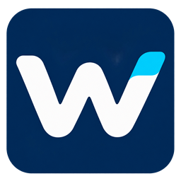

<!doctype html><html lang="zh-CN"><meta charset="utf-8"><meta http-equiv="Content-Security-Policy" content="default-src 'none'; style-src 'unsafe-inline'; img-src 'self'"><title>工作台</title><style>
body{margin:0;min-height:100vh;display:grid;grid-template-columns:236px 1fr;background:#eef1f4;color:#17232d;font:15px/1.7 "Segoe UI","Microsoft YaHei UI",sans-serif}
aside{background:#132c41}
main{display:grid;place-content:center;justify-items:center;text-align:center;gap:6px}
.mark{position:relative;width:56px;height:56px;border-radius:16px;background:#e99f2f;overflow:hidden}
.mark i{position:absolute;left:11px;right:11px;top:50%;height:8px;margin-top:-4px;border-radius:4px;background:#132c41;transform:rotate(-35deg);box-shadow:0 -14px 0 -2.5px #fdecce,0 14px 0 -2.5px #fdecce;animation:pass 1.4s ease-in-out infinite}
@keyframes pass{50%{transform:rotate(-35deg) translateX(4px)}}
@media (prefers-reduced-motion:reduce){.mark i{animation:none}}
h1{font-size:22px;margin:14px 0 0}p{margin:0;color:#4b5967}small{color:#74818e;margin-top:10px}
@media (max-width:900px){body{grid-template-columns:76px 1fr}}
</style><aside></aside><main><h1>正在打开工作台</h1><p>读取这台电脑上的项目、任务和额度…</p><small>最小化后在右下角托盘继续运行；关闭窗口会退出工作台。</small></main></html>
